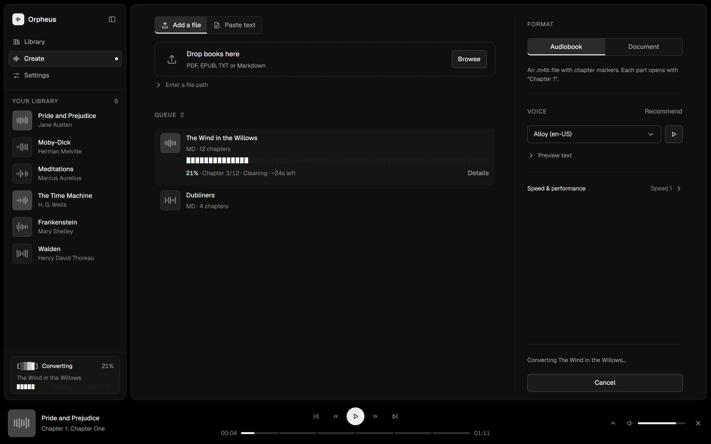

Gabriel Meleiro
01 Current project
Orpheus
It turns PDF, EPUB, Markdown and plain text files into audiobooks, with a Tauri and React app sitting on top of a Python engine and the speech models running on your own hardware through MLX or CUDA.

More work
- 02 Tempestas Forecasting for the Dutch energy market, where a TCN predicts wind generation and XGBoost turns that forecast into an electricity price.
- 03 OpenML Upload A school project for getting datasets onto OpenML when they don't fit its Croissant format, with every file held in quarantine until it has been scanned and reviewed.
- 04 Pegasus A limit order book in C++ that matches orders by price and then by time, and names both sides of every fill.
About
Most of my projects start with a fairly simple question, like whether something can be predicted or whether it'll run on a laptop, and I like seeing them through to software that actually works. That means doing the modelling and the engineering that ships it, and I enjoy both.
- Modelling
- PyTorch, TensorFlow, XGBoost, scikit-learn, pandas, MLX
- Engineering
- Python, TypeScript, FastAPI, React, Tauri / Rust, PostgreSQL, Docker